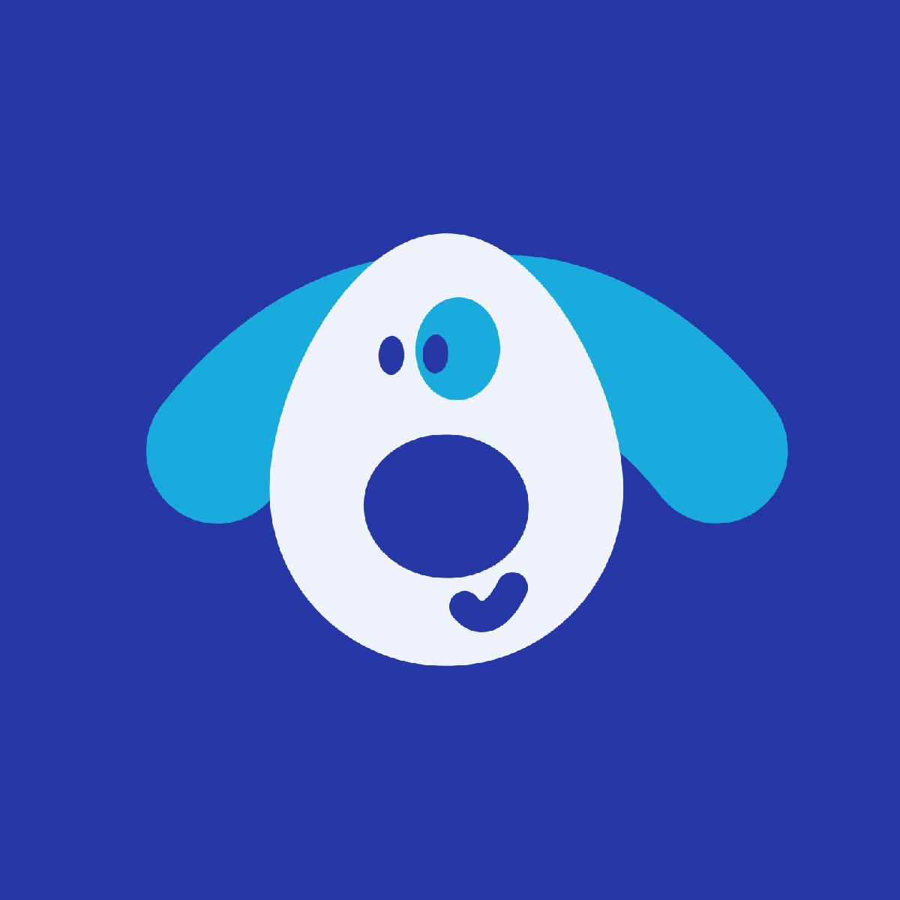
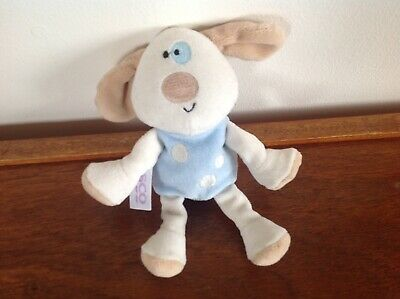
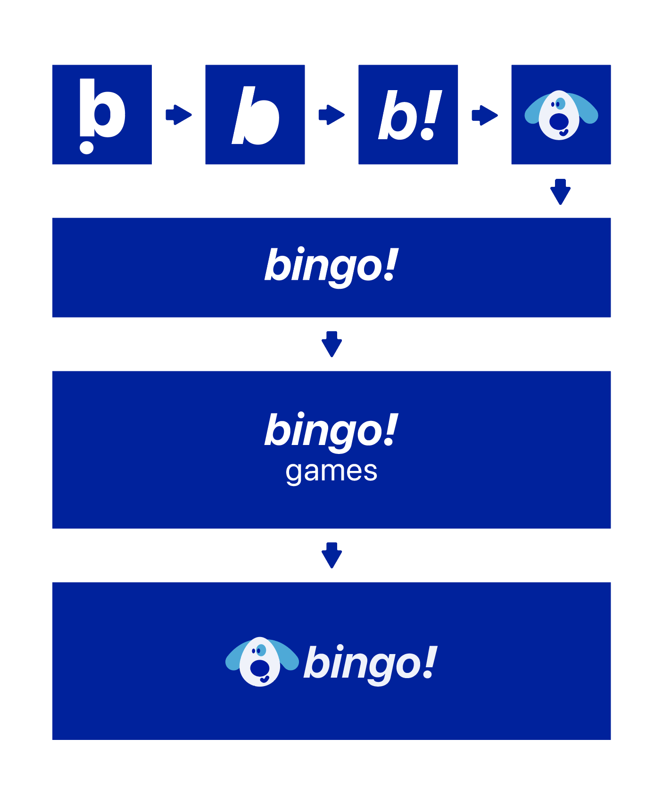
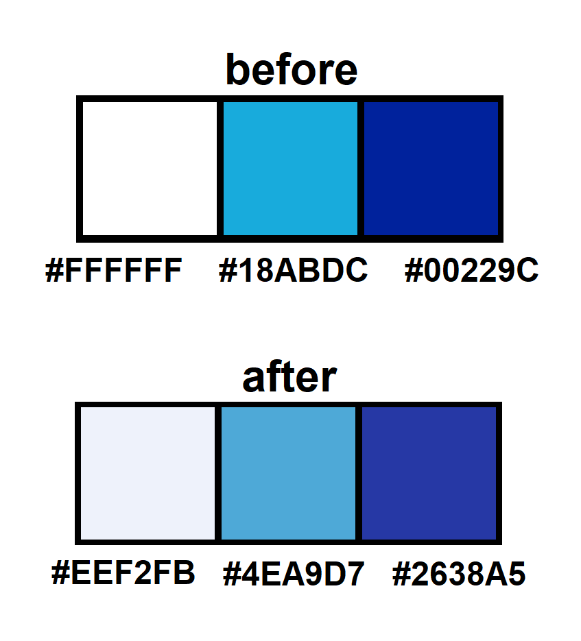
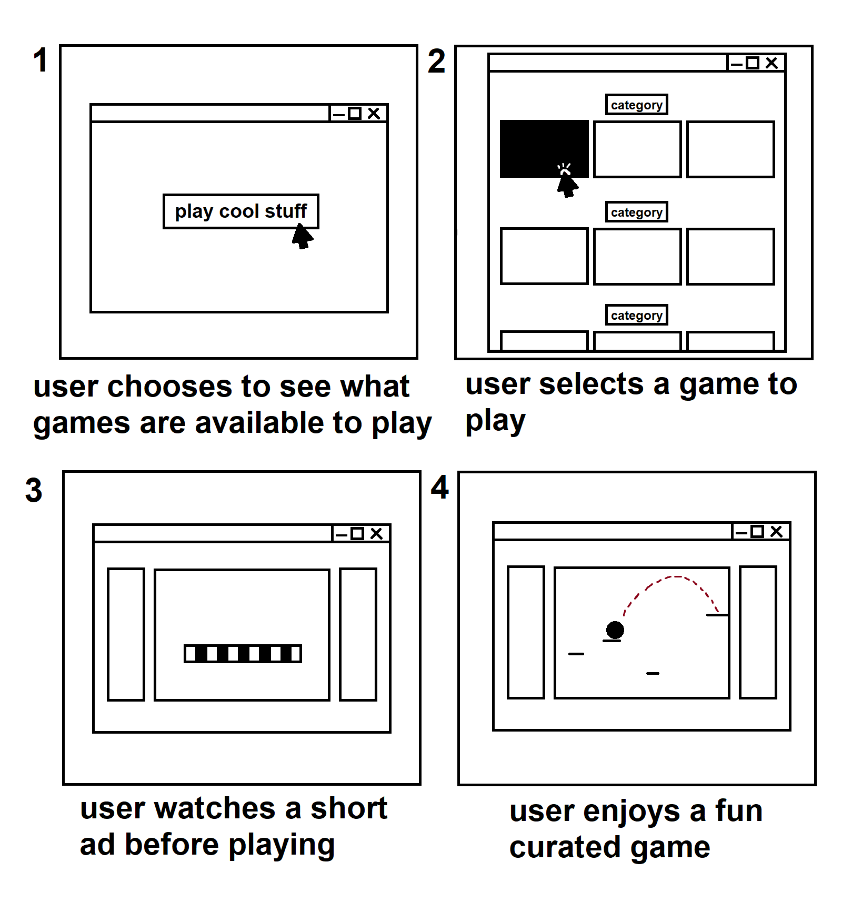
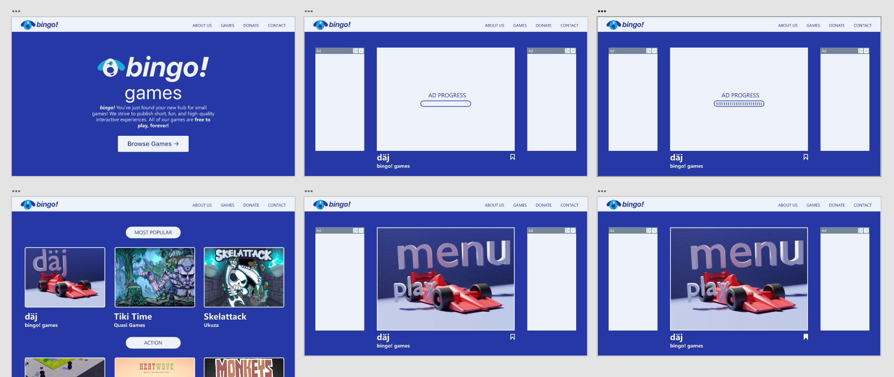

bingo! Games

Overview
Sites like Newgrounds and Kongregate are cluttered with undesirable playable experiences. What solution can I come up with to mitigate this issue?
Goals
A prototype demo of how a Newgrounds alternative might look and function.
Users & Audience
The intended audience is people of all ages who want to play games in their browser; this could be because of slower internet, limited disk space, operating system compatibility, or other reasons.
Challenges & Solutions
After looking at the business models of CoolMathGames, Newgrounds, Kongregate, and others similar, I decided that curation of games and posting up ads would be a good solution. This combines the curation aspect of CoolMathGames and the ad system/non-education focused experiences of the others.
Brand
I wanted bingo! to have a cute spin. I took inspiration from Yahoo! with the name and spun it off. I liked how Yahoo is an expression of joy, so I took that and chose “bingo!” as an expression of excitement/discovery.

It’s only right for a cute mascot to go along with it, so I created a vector likeness of a stuffed animal that a friend of mine in the UK has.


I decided to dull the colors a little since they were a bit too high in saturation and caused unnecessary strain on the eyes. This is an especially bad thing when you expect the users of your site to be staring at a page for several minutes!

Storyboard
I once again put myself in the shoes of the user, and came up with a user flow/storyboard. A user might come to the website having heard of its features and think it’s something they may be interested in. These are the steps that follow. It’s important to storyboard in order to know what features should be instantly obvious!

Prototype
With everything laid out and a great idea of the direction I wanted to go, I created a prototype. I populated this prototype with my own game (daj) as well as the thumbnails of various other games I was able to find on itch.io that corresponded to my categories.
